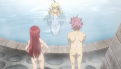

Fairies's Christmas

Information
Natsu vs. Mavis is the eighth OVA for the Fairy Tail series by Hiro Mashima, and the second for the 2014 anime series. It was bundled along with the Special Edition of Volume 58 of the Manga, which was released on November 17, 2016. After Erza recruits Natsu to assist Mavis by allowing her to enjoy the qualities of a hot bath, Team Natsu and Juvia take up Warrod's request to look for a hidden treasure buried by the First Master herself 100 years ago, although the task becomes much harder than it was initially let on.
Summary
In the washing room, most of the Fairy Tail girls recoup and bathe while being joined by their First Master Mavis, who appears in the bath tub enjoying herself in the water. Lucy questions if a ghost can even bathe which causes Wendy to question the very same myth. Mavis looks up in worry as she says she just enjoys the attraction of the bath but Erza brushes this off by simply saying everyone including ghost should be able to enjoy the hot bath, while showing examples of what she meant to the First Master in the form of the enjoyment of soaking yourself, cleansing your body as well a playful skinship among each other. Mavis begins to cry which Carla blames Erza for the one caused this but Mavis says it's fine as she just like to enjoy the atmosphere of everything.
Erza suddenly gets an idea, that being to get Natsu to use his flames to heat up the bath to extreme temperatures, that way someone even like Mavis can enjoy the truth warmth of the bath. Erza calls him over much to Lucy's chagrin, with Natsu walking over immediately without any regard to any of the nude women in their bathing section. Erza tells him her plan to cheer up their master, Natsu agreeing to the "match" between him and the First Master. Lucy continues to complain about Natsu's intrusion and begins walking over to Wendy's safe spot but slips on a bar of soap, knocking Erza into the bath that Natsu begins to heat up. As both of the girls begin to feel the effects of the heat, Mavis looks in astonishment as she currently feels the bath from Natsu's fire heating it up. Afterwards, Mavis thanks a tired Natsu for his help while he just notices Lucy burned from his flames, causing her to bicker at her while Mavis and Erza both curious at her words. The First Master then leaves, although Lucy points out she look somewhat discouraged.
A voice is then heard from the bath that turns out to be Warrod, who said he was lured in by the mixed bathes in the guild, although he reveals that was a joke. He then says that he actually came because he was in search for something that belonged to Mavis; the Mages look in wonderment. In a memory, Yuri and a young Warrod see Mavis burying a treasure box full of her memories, something she wants someone to find in the future to bring back of good memories of her existence. Warrod in the present says it was 100 years ago from today while Lucy point out their master was looking down earlier, which Warrod concludes it could because of the treasure she hidden. Lucy says they cannot just take it but Warrod says it's more of a way to express affection towards her. Erza agrees with Warrod's stance as it would be a good way to encourage their First Master but after Warrod tells them he does not know of its location Lucy complains Natsu tells her to stop it while trying to fire her up in order to look for the treasure hitting Erza in the process; the swordswoman uppercutting the Dragon Slayer for his foolish act.
Erza then rounds up the rest of her team as well as Juvia to look for the treasure, dividing the teams into herself, Natsu, Lucy and Happy in the first one; Gray, Wendy, Carla, Juvia into the second. The teams head out, beginning to look all over Magnolia in attempt to uncover the treasure. Erza's group heads to the park which they decide to begin digging holes by all the trees, causing Natsu to instead wanting to burn them but Lucy stops him and hands him a shovel and they begin digging. Happy looks in worry while digging which causes Lucy to ask of him but the Exceed declares he's fine. Meanwhile Gray's group begins their own scavenger hunt; Wendy telling the Ice Mage to not use his Magic to destroy the trees, with one of them falling on top on him as a result. Juvia then floods the entire forest in hopes that the treasure would come afloat but that proves to be unnecessary as Wendy scolds her as well.